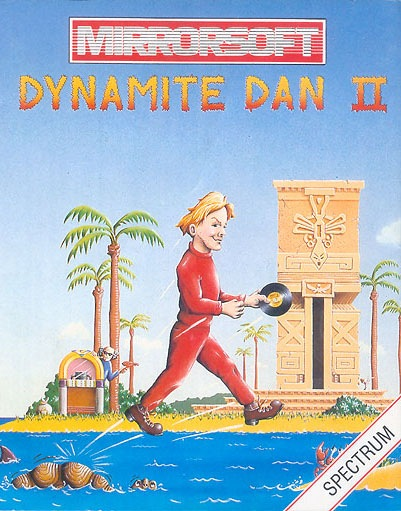
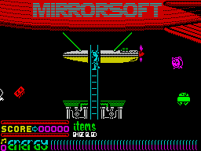
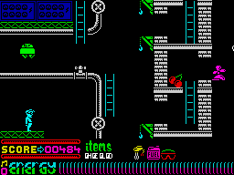
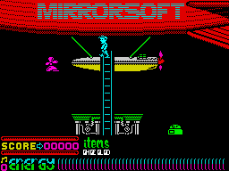

Dynamite Dan II


{kind=link}

| Publisher: | Mirrorsoft |
| Price: | £7.95 |
| Year: | 1986 |
| Source: | CRASH, Issue 32 |

Dr Blitzen is back with a vengeance! He has set up his headquarters in a group of eight islands — The Islands of Arcanum — and once again, he has laid dastardly plans for world domination. His latest idea is to destroy the youth of the world by planting subliminal sound waves in pop records. Unaware of the deadly threat Dr Blitzen poses, teenagers listen to their favourite stars on vinyl, unaware of the threat they pose! As the pop fans listen their minds are gradually destroyed, and soon Dr Blitzen will be in control.

girders and pipework that makes up
the local landscape, Dan is carrying
the red specs — they protect him from
Dr Blitzen’s confusing ray gun
Luckily, Dynamite Dan is on hand to confront his old enemy and save the world. His main task is to locate Blitzen’s secret hideout, find the record pressing plant where the mind-sapping singles are made, and destroy it. All eight islands that make up Arcanum have to be explored before the password that gives access to the pressing plant can be assembled. A record and a jukebox has been placed on each island, and when the record has been found, playing it on the jukebox reveals part of the code. Then it’s time to refuel the airship and move on to the next island.
The first island is a maze-like network of pipes, ladders and iron girders, all brightly coloured. Dan climbs up and down the ladders or leaps off girders in the search for the record and the jukebox, which have to be found as quickly as possible. Yes, it’s a platform game in the mould of the original...

— this time Dan has collected the
Outboard Motor... can come in
handy when he falls in the drink
Of course, nothing is ever as easy as it sounds. As you make your way round each island there are hosts of nasties out to get in your way. Some are robotic, others monster-like, others spectral. Each of them moves in a different way and at a different speed. You must either jump over them or simply avoid them — whichever is easiest. They all sap energy on contact, and a bar at the bottom of the screen shows Dan’s energy level. Some nasties have a small dose of kleptomania and rob Dan of the useful objects that he has collected. White sprites steal bombs, while magenta nasties steal fuel which comes in magenta cans.
Then, of course, there’s the deadly Dr Blitzen himself who is is keen to zap Dan at every opportunity with his mesmeric psychon ray gun. A touch of this and you have difficulty controlling Dan — so beware! Dr Blitzen looks every bit the mad professor with long wispy hair and dark sun glasses to hide his eyes. He dashes about on his mini-hovercraft, blasting away with this MP ray gun.

to land on one of the Islands of
Arcanumin his quest to foil the mind
-sapping plot of Dr Blitzen
Your score so far is shown at the foot of the screen, along with the objects Dan has collected on his travels. Look out for bowls of fruit, oversized cherries and grapes, and cups of tea — they all revitalise the energy bar when Dan walks over them. Bombs are scattered around the islands, and these can be used to blast your way through barriers, giving access to different parts of the landscape. A set of large red-rimmed goggles protect Dan from the mesmeric powers of the evil Blitzen’s ray gun, and cans of fuel must be collected to refuel the blimp so Dan can escape to another island. There are mystery objects on the islands, which disappear from the game when the blimp takes off... so find them before leaving! Each island contains a secret passageway, though access to it depends on having the appropriate object. Be careful, however, not to fall into the sea. You might not float!
Once you’ve collected the eight elements of the password and gained access to the pressing plant, it’s time to plant a bomb and beat a hasty retreat — Dan has three minutes to get back to the airship. But it’s a long journey and Dynamite has only one life. The future of pop music, never mind the mental health of mankind, is in your hands.
CRITICISM
“I really hated Dynamite Dan so I was a little dubious when I was given the sequel to review. Happily, this is a completely different game from its ‘parent’. The first thing that you notice are the brilliant sound effects and tunettes — the game is crammed with them. Playing the game is surprisingly easy, so you get a sense of achievement which spurs you on. The graphics are excellent; the characters are large and well animated and the backgrounds are colourful and full of detail. I really enjoyed playing Dynamite Dan II, as it is very playable and addictive. I strongly recommend it to everyone.”
“Hey, Dan is just soooo cool, he really is!; happily scampering around these meanie infested islands without flinching. This is a very worthy successor to the original game, and actually improves on a lot of the features. No longer do Dan’s lives disappear at a high rate of knots — this time an energy bar replaces the lives system and it can be topped up. A great game which will appeal to fans of the original and to newcomers alike.”
“DDII certainly is one of the most polished arcade adventures around at the moment. It contains nearly everything that you should expect to find in such a game, with colourful and neatly drawn graphics — and minimal colour clash. The game plays some nice tunes, not all of them sound very convincing, but the beeps are very cleverly arranged. Lots of thinking and planning out of routes is required. All the characters are very individual in their movements which results in a very addictive and playable game. DDII is fun to play — a great follow up, and superb value for money.”
COMMENTS
| Control keys: | A, D, G, J, L left, S, F, H, K, ENTER right, W, R, Y, I down, Bottom Row up/jump |
| Joystick: | Kempston, Cursor, Interface 2 |
| Keyboard play: | Responsive |
| Use of colour: | Very bright and cheerful |
| Graphics: | Fun and detailed |
| Sound: | Excellent tunes and effects |
| Skill levels: | One |
| Screens: | 200 |
| General rating: | A very worthy successor to Dynamite Dan I! |
| Use of computer: | 93% |
| Graphics: | 93% |
| Playability: | 94% |
| Getting started: | 91% |
| Addictive qualities: | 93% |
| Value for money: | 92% |
| Overall: | 93% |